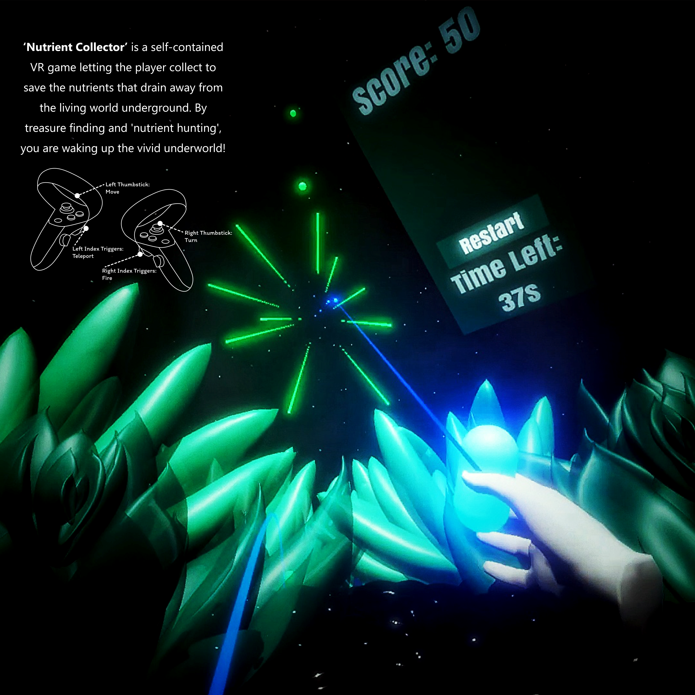

An ecological idea becomes a playable loop. Nutrient Collector asks the player to catch the nutrients draining away from a living underground world — and in doing so it never has to explain nutrient cycling, because the act of collecting is the explanation.
00Executive Summary
What this project is, and why it worksNutrient Collector is a self-contained VR game in which the player collects and saves the nutrients draining away from the living world underground. Through treasure finding and nutrient hunting, the player wakes up a vivid underworld that had been going dark.
- The mechanic is the message. The game never explains the nutrient cycle — the player learns it by doing it. Nutrients drift upward and away, and the only way to keep the world alive is to catch them. That sentence is the entire design brief.
- Scale carries the drama. The scene is built around giant underground living things with the player at insect scale, so the environment reads as alive rather than as a level. The nutrient bubbles are not coins; they are something escaping from a body.
- Onboarding is folded into the space. The tool only unlocks after three treasure boxes are found, which forces the player to traverse the whole platform before facing any challenge. The tutorial is the map itself, not a pop-up.
- Comfort was treated as a design requirement. Both continuous movement and teleportation are offered, turning uses snap rather than smooth rotation, and falling off the platform restarts rather than penalises — VR comfort decisions made early, not patched in later.
| Format | Self-contained VR game — first-person, single-player, session-based |
| Scope | Interaction design · VR gameplay mechanics · level & environment design · UI/HUD · build |
| Year | 2024 |
| Core loop | Explore → open 3 treasure boxes → unlock the energy tool → fire at rising nutrient bubbles → reach 100 points |
| Deliverables | Playable VR build · trailer · poster & control reference |
01Design Perspective
Discipline: game & interaction designThe design problem is not “build a VR scene” — that is an environment task. It is how do you make an abstract ecological process feel urgent in under two minutes, in a medium where the player can look anywhere and has no muscle memory to rely on.
| Design decision | What it is | Why it was made |
|---|---|---|
| Collect, don't explain | The nutrient cycle is expressed only as a verb. | A player who has spent ninety seconds catching escaping nutrients understands loss and replenishment better than a paragraph of copy would manage. |
| Gate the tool behind exploration | Three treasure boxes must be found before the energy tool activates. | It teaches the platform layout and the teleport points while the player still has nothing to fail at — the safest possible way to onboard. |
| Make the world bigger than the player | Giant underground organisms; the player is the smallest thing in the scene. | Scale is what converts “a level with pickups” into “a body you are inside of”. |
| Time-box the session | A countdown to 100 points, with an automatic restart. | A short, repeatable round suits a standing VR player far better than an open-ended level, and it makes a single arcade session legible to an observer. |
| Punish nothing | Falling off the platform restarts; the round resets after 10 seconds. | VR failures should cost time, not progress — frustration in a headset is much more expensive than frustration at a keyboard. |
The underworld starts dark and gets brighter as the player collects. The visual reward is not a score increase — it is the world coming back. That inversion is the whole point of the piece: the player is not winning points, they are keeping something alive.
02Technical Perspective
Discipline: VR implementationTechnically the project is a self-contained VR build: a single continuous playable space with no loading, combining two locomotion systems, a projectile interaction, and a world-space UI — all of which have to remain comfortable for a player standing in the middle of them.
Dual locomotion
Continuous movement for players who can tolerate it, and teleportation to fixed discs for those who cannot. Offering both is what keeps the piece playable for the widest range of people without changing the level.
Comfort-first turning
Snap turn rather than smooth rotation on the right stick — the standard mitigation for one of the most common causes of VR discomfort, chosen at design time rather than after playtesting complaints.
Projectile interaction
The energy tool fires along a visible ray toward rising nutrient bubbles. The beam doubles as aiming feedback and as the visual language of the mechanic, so the player never has to be told what the tool does.
World-space UI & state machine
Score and countdown live on an in-world canvas alongside a restart button, with a state flow of explore → hunt → win or lose → auto-restart. Everything the player needs is in the scene, not on a flat screen.
Controls
| Input | Action |
|---|---|
| Left thumbstick | Continuous movement |
| Left index trigger | Teleport to a target disc |
| Right thumbstick | Snap turn |
| Right index trigger | Fire the energy projectile at nutrient bubbles |
A single locomotion system would have been simpler to build and would have excluded part of the audience. Because the level is laid out on a platform with teleport discs already present for puzzle reasons, supporting both cost almost nothing — a good example of a level-design decision and an accessibility decision being the same decision.
03Trailer & Gallery
The game running